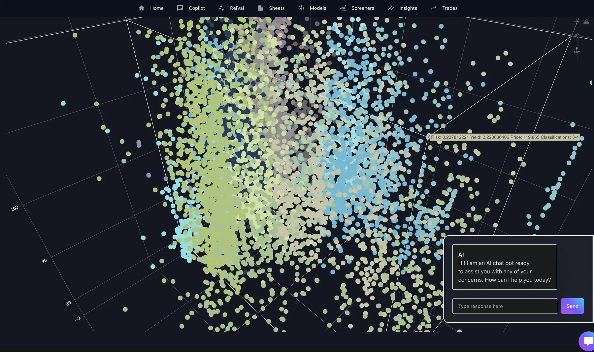
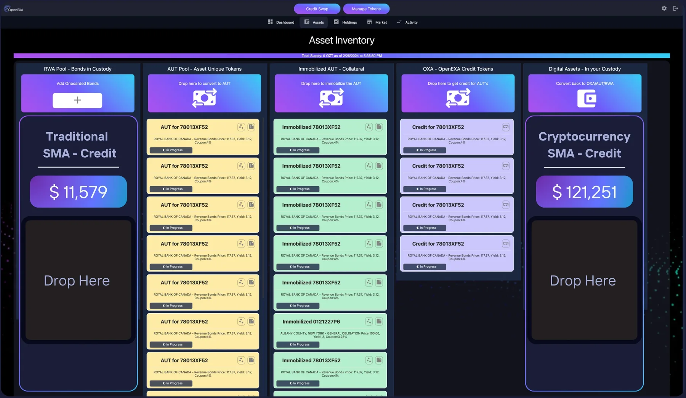
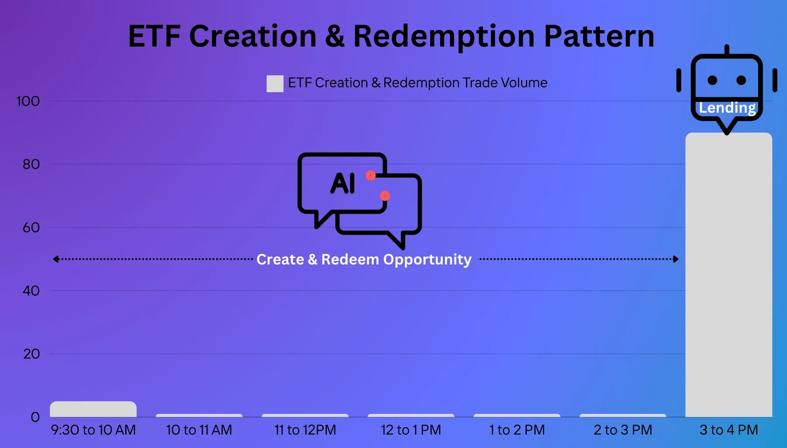
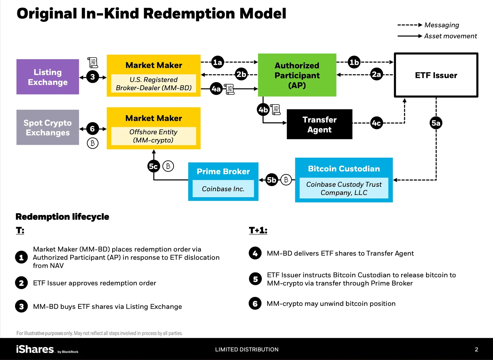
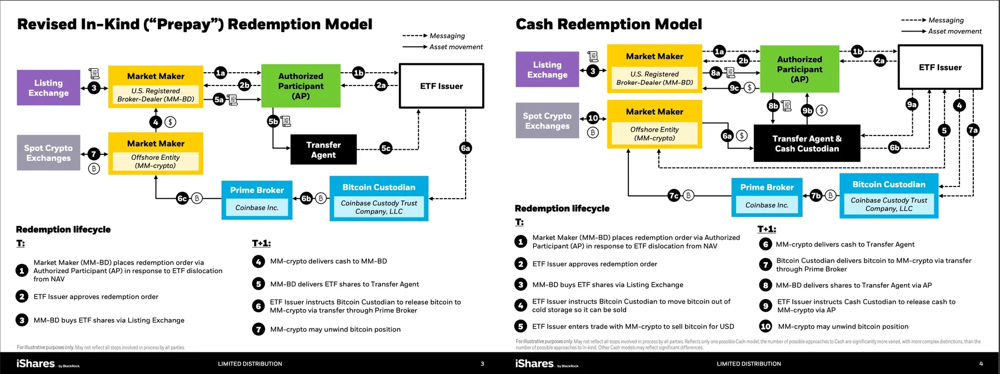
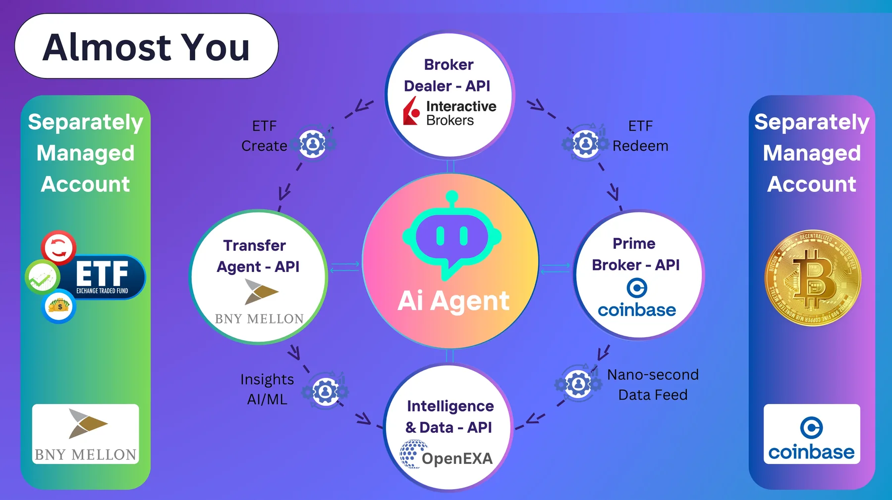

Creating a Copilot or AI agent for financial markets is a complex and challenging endeavor. The two main variables in this context are the strategy and the inherently unpredictable nature of the market. A flawless strategy is essential because even a single mistake can result in significant financial losses. Due to the unpredictable nature of the markets, a robust strategy alone is insufficient. Stringent controls must be established to safeguard strategies against market volatility.
With advancements in generative AI for relative value analysis, combined with the implementation of precise guardrails and price boundaries, the dream of effective Copilots and AI agents in financial markets is becoming increasingly feasible. These technologies can provide the necessary oversight and dynamic adjustments to navigate the complexities of financial markets with greater confidence and accuracy.
Copilot: In its first phase, Copilot will revolutionize financial markets by harnessing the power of financial data. Fund managers and traders on Wall Street will be able to easily create trading strategies and analyze data through a series of conversations. By integrating Copilot into these apps, users will discover insights through natural language interactions rather than navigating complex interfaces. The Copilot will act as a pair trader, advisor, and fund manager, offering autocomplete-style suggestions for trading strategies.

Traders and fund managers will receive suggestions from Copilot while building a strategy or learning about a new asset class by simply writing a natural language comment describing their goals or intentions. Using Copilot's advanced contextual analysis of strategy data sheets, financial markets, and related files, it will offer suggestions directly on their screen, allowing them to make informed decisions quickly.

OpenEXA's Copilot is powered by the OpenEXA knowledge base, a new AI system created by fine-tuning LLM models on OpenEXA's datasets. OpenEXA's Copilot will be continually trained on financial markets, crypto markets, and an extensive range of internal OpenEXA datasets, making it a highly sophisticated and effective tool for traders and fund managers, whether they are new to alternative asset trading or seasoned professionals. Traders can further fine-tune the model to fit their own strategy, risk tolerance, and style.
OpenEXA's Copilot will also facilitate learning new asset classes such as cryptocurrency. By writing natural language comments describing what they want to achieve or learn, AI Copilot will provide relevant suggestions, enabling users to develop a deeper understanding of the asset class. With the power of Copilot, learning a new asset class has never been easier. It will provide valuable insights and suggestions to help optimize trading strategies and improve performance.
With Copilot, traders and fund managers can focus on making the right decisions instead of spending valuable time analyzing data. OpenEXA plans to revolutionize the trading industry by simplifying the initial steps of strategy formulation and putting traders and fund managers in the driver's seat for the final strategy. This intermediate approach will familiarize traders and fund managers with the technology, which is critical to the eventual release of an intelligent agent that will take these capabilities to the next level.
Unlock ETF markets with Ai Agents.
In the dynamic realm of 24/7 trading, the dawn of Copilots and Autonomous Intelligent Agents is rapidly approaching. These cutting-edge technologies are poised to reshape the landscape of financial markets, offering real-time insights, swift decision-making capabilities, and unparalleled efficiency. With Copilots by their side and Autonomous Intelligent Agents at the helm, traders will navigate complexities with ease, leveraging data-driven strategies and adaptive algorithms to stay ahead in an ever-evolving marketplace. As these intelligent systems continue to evolve and integrate seamlessly into trading workflows, the financial industry stands at the forefront of a new era where innovation and automation drive success around the clock.
Let's explore how markets will evolve as we delve into the intricate workings of ETF create and redeem patterns, as well as the transaction workflows that will underpin these processes. For instance, we can consider BlackRock iShares IBTI to understand the roles of the involved parties and counterparties, which will be crucial for comprehending the full spectrum of future ETF operations. ETFs (Exchange-Traded Funds) will continue to be complex financial instruments requiring precise coordination between various entities, including fund managers, authorized participants, market makers, and custodians. These entities will work together to ensure the efficient creation and redemption of ETF shares, maintaining the ETF's liquidity and alignment with its underlying assets.
By examining BlackRock's iShares IBTI workflows and patterns, we will gain a deeper understanding of future market conditions and identify the factors that will influence ETF performance. What key drivers and trends will shape the market of tomorrow? How will market participants respond to shifts in demand and supply, and what strategies will they employ to optimize their positions? Exploring these questions will provide valuable insights into the evolving landscape of ETFs and the innovative approaches that will be necessary to navigate and capitalize on emerging opportunities.



Ai Agent: AI Agents, the next phase of financial markets automation, will be enabled by technologies such as Relative Value Analysis, Tearsheets, and Copilots. These AI Agents will represent a significant leap in sophistication compared to current Copilot systems. Dubbed "Almost You," these AI Agents will operate with a level of autonomy and intelligence that allows them to execute strategies on behalf of traders 24/7.
Relative Value Analysis will empower these AI Agents to assess the worth of different assets in relation to each other, enabling them to identify optimal trading opportunities with precision. By continuously analyzing market data and trends, the AI Agents can dynamically adjust strategies in real time to maximize returns and minimize risks.
Tearsheets will be pivotal in this advanced system, serving as essential guardrails and defining boundaries by delivering detailed performance reports and analytics. These reports will encompass key performance indicators (KPIs), risk metrics, and in-depth insights into the effectiveness of various strategies. By harnessing these comprehensive insights, AI Agents will be empowered to make more informed decisions and fine-tune their approaches to better align with the trader's objectives and risk tolerance. This integration will ensure that the strategies employed are not only data-driven but also dynamically adjusted to optimize performance and mitigate risks.
Copilots, which already assist traders by offering real-time insights and suggestions, will serve as the foundation for these AI Agents. However, the "Almost You" AI Agents will extend beyond merely providing advice; they will autonomously execute trades based on the trader's predefined strategies and preferences. This continuous execution ensures that opportunities are never missed, and strategies are consistently applied even when the trader is not actively monitoring the markets 24/7.
"Almost You" AI Agents will essentially become an extension of the trader, embodying their trading philosophy and goals. By integrating advanced AI capabilities with comprehensive market analysis tools, these Agents will operate seamlessly and efficiently, offering traders unparalleled support in navigating the complexities of financial markets. This evolution marks the beginning of a new era in finance, where innovation, automation, and intelligent systems work together to drive success around the clock.

Let's explore how the ETF (Exchange-Traded Funds) Create and Redeem Arbitrage trades will function with the involvement of an AI Agent like "Almost You". For this example, we will take the market favorite, the Bitcoin ETF, and analyze step by step how Almost You will execute the trade using partner API's.
- Spotting the Opportunity: OpenEXA enhances its intelligence platform by aggregating real-time data feeds, refreshed in nanoseconds, from multiple exchange and market-data sources, and CME crypto market data. Leveraging this comprehensive and high-frequency data, OpenEXA's Relative Value and Tearsheet engines identify opportunities with precision, enabling sophisticated analysis and strategic decision-making and makes it available over an API.
- Calling SMA Custodian API: Almost You monitors OpenEXA's opportunity API to identify potential opportunities. Upon spotting an opportunity, it coordinates with custodians to review the holdings, such as BNY Mellon for traditional assets and Coinbase for Bitcoin. Based on the holdings, Almost You then decides whether to borrow the asset to short, optimizing the strategy for maximum potential returns.
- Calling Broker Dealer API: Almost You engages a broker-dealer API to execute buying, selling, or shorting of securities on its behalf. These broker-dealers handle all trades for Almost You, interfacing seamlessly with other key entities including prime brokers, transfer agents, custodians, authorized participants, and issuers. This integrated approach ensures efficient, compliant, and streamlined transactions across the financial ecosystem.
- Calling Prime Broke API: After assessing the holdings and borrowing the asset, Almost You engages a prime broker such as Bank of America or Coinbase to communicate with the ETF issuer through an authorized participant (AP). This process locks in the price for creation or redemption at a specified rate. Approval is obtained prior to shorting the asset, ensuring all steps are coordinated and compliant with regulatory standards.
- Calling Transfer Agent API: After receiving approval from the ETF issuer and the authorized participant via the prime broker API, Almost You instructs the transfer agent, such as BNY Mellon, to coordinate the transfer of assets from your SMA custodian to the issuer's custodian. This seamless process ensures efficient and secure handling of assets, maintaining compliance and optimizing operational efficiency.
Innovative approaches, such as leveraging cutting-edge LLM's, will transform the investment landscape in profound ways. Advanced data analytics, machine learning, and artificial intelligence will enable investors to gain a competitive edge by uncovering hidden opportunities and making more informed decisions. These technologies will analyze vast amounts of market data in real-time, identifying patterns and trends that may not be apparent through traditional analysis.
Moreover, the integration of Autonomous Intelligent Agents into investment strategies will revolutionize how investors interact with the markets. These agents will execute trades, manage portfolios, and provide insights with unparalleled speed and accuracy, helping investors navigate the complexities of the financial markets with greater precision and confidence. As a result, investors will be better equipped to adapt to changing market conditions, optimize their investment strategies, and achieve their financial goals.
In conclusion, exploring the intricate details of ETF create and redeem workflows and understanding the roles of various market participants will be essential for grasping future market conditions. By leveraging cutting-edge technologies such as Large Language model (LLM) and innovative approaches, investors will transform their investment strategies, gain a competitive edge, and navigate the financial markets with enhanced precision and confidence.
Gen-AI: Business Model - "Unlocking Gen-AI's True Potential: The Next Phase of Monumental Value Creation"
Finance series: Part 1 - "The Impact of Generative Ai Models: Revolutionizing Relative Value Analysis in Securities Markets"
Finance series: Part 2 - "AI Guardrails, Precise Boundary and Tearsheets can Transform Value Creation in Financial Markets"
Finance series: Part 3 - "AI Agents in Finance: How Relative Value Analysis and Tearsheets Pave the Way for AI Copilots and Autonomous Intelligent Agents"